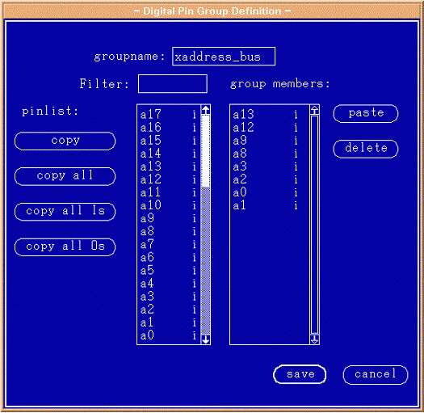

Defining pin groups
The x- and x-address bus groups are primarily useful in the Vector Setup window, the Timing Diagram and the State List result windows. In these windows, the APG memory pattern is displayed as a vector for each cycle. The order of the pins in the X- and Y-address bus groups is important to achieve a bus display where the most-significant bit (msb) of the bus appears as the left-most bit in the display of the group in the result windows. The group must be defined with the msb of the bus at the top of the group member list and correspondingly, the least significant bit (lsb) should appear at the bottom of the list. In this SRAM example, the following list shows the mapping between the address pins and the internal x-address bus (see the figure below):
- a13=x9
- a12=x8
- a9=x7
- a8=x6
- a5=x5
- a4=x4
- a3=x3
- a2=x2
- a0=x1
- a1=x0
